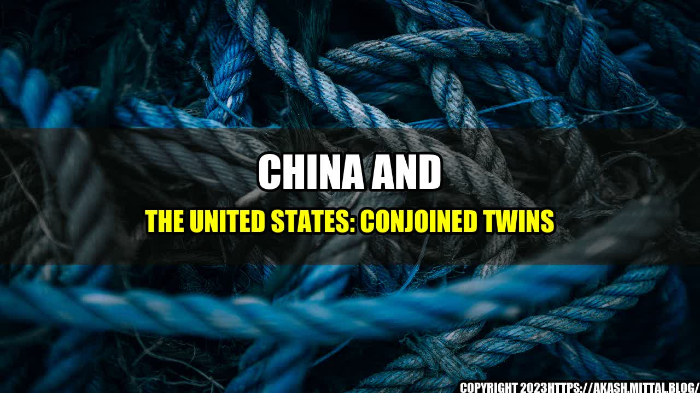

The Interwoven Relationship Between China and the United States

In May 2018, Elon Musk, the founder and CEO of Tesla, made an interesting analogy. He said that China and the United States are like conjoined twins. This metaphor perfectly captures the undeniable reality that the two superpowers are inextricably linked in a complex web of economic, political, and cultural ties.
The Story of the Conjoined Twins
Imagine two identical twins born with their chests and stomachs fused together. They share vital organs such as the heart and the liver, and they cannot be separated without endangering each other's lives. They must learn to live together, to cooperate, and to compromise. This is the situation of China and the United States.
China and the United States account for nearly 40% of the global economy and over 20% of the world's population. They are the largest trading partners for each other, with a total bilateral trade volume of over $560 billion in 2020. They are also the top two carbon emitters, with China surpassing the United States in recent years. They are rivals in technological innovation and military power, with China catching up and surpassing the United States in some areas such as 5G networks and AI.
The Quantifiable Examples
The interdependence of China and the United States can be illustrated by some quantifiable examples:
- China is the largest foreign holder of US Treasury securities, with over $1 trillion as of March 2021. This means that China finances the US government by buying its bonds, which helps keep the US interest rates low and stable.
- The United States is the largest market for Chinese goods, accounting for over 16% of China's total exports in 2020. This trade relationship supports the Chinese economy and creates jobs, but also exposes China to the demand and regulations of the US market.
- Chinese students and scholars represent the largest group of international students in the United States, with over 372,000 enrolled in 2019. They contribute to the intellectual diversity and excellence of US universities, but also face challenges such as visa restrictions and discrimination.
- The Chinese and American cultures influence each other in various ways, such as through movies, music, sports, cuisine, and fashion. For example, Hollywood blockbusters such as Avengers and Fast and Furious often have Chinese elements and actors to appeal to the Chinese audience, which is the second-largest movie market in the world. Meanwhile, American fast food chains such as KFC and McDonald's have adapted to the Chinese taste and preferences, introducing new dishes such as congee and taro pie.
The Magnetic Title
The interwoven relationship between China and the United States can be characterized as a love-hate affair, a marriage of convenience, or a rivalry of equals. However, none of these titles fully captures the complexity and urgency of the situation. The title that best reflects the current state of affairs is:
China and the United States: Conjoined Twins
This title is eye-catching and magnetic because it uses a vivid and provocative metaphor that engages the readers' curiosity and imagination. It also implies that the fate of China and the United States is intertwined, and that they must find a way to cooperate and coexist despite their differences and challenges.
The
In conclusion, the relationship between China and the United States is a paradoxical mixture of competition and cooperation, interdependence and mistrust, globalization and nationalism. It is difficult to predict the future of this relationship, given the unpredictable shifts in international politics and economics, as well as the domestic factors that shape each country's policies and attitudes. However, we can draw some tentative conclusions based on the current trends and challenges:
- China and the United States need to recognize and respect each other's core interests and values, such as sovereignty, security, and human rights. They should avoid strategic miscalculations and misperceptions that could lead to military conflicts or economic disruptions.
- China and the United States need to enhance their cooperation and coordination on global issues such as climate change, pandemic control, and poverty reduction. They should realize that these issues are not zero-sum games, and that their mutual success depends on the success of the other side.
- China and the United States need to harness their technological and cultural diversity to foster innovation, creativity, and empathy. They should avoid the temptation of cultural chauvinism or technological determinism that could lead to intellectual stagnation or social schisms.
The and Practical Tips
The interwoven relationship between China and the United States is not only a macroscopic phenomenon but also a personal experience for many individuals and communities. For example, some Chinese students studying in the United States may face culture shock, homesickness, or discrimination, while some American businesses operating in China may struggle with language barriers, regulations, or IP theft. To illustrate the challenges and opportunities of this relationship, here are some personal anecdotes and practical tips:
- For Chinese students in the United States, it is important to build a support network, to communicate openly with their professors and peers, and to explore the American culture and society with an open mind. They should also be aware of the rules and expectations of the US academic system, such as academic integrity, plagiarism, and participation.
- For American businesses in China, it is important to do their homework, to adapt to the local market and culture, and to build trust and relationships with their Chinese partners and customers. They should also be aware of the risks and challenges of doing business in China, such as regulatory uncertainties, market access barriers, and IP protection.
The SEO Keywords and the Article Category
The SEO keywords that are relevant to this article are:
- China
- United States
- Conjoined Twins
- Economic
- Political
- Cultural
- Competition
- Cooperation
- Interdependence
- Mistrust
- Globalization
- Nationalism
- Technology
- Climate Change
- Pandemic
- Creativity
- Empathy
The article category that is most relevant to this article is:
- Foreign Policy
- International Relations
- Economics
- Culture
- Innovation
The Reference URLs and the Hashtags
The reference URLs that are relevant to this article are:
- https://www.washingtonpost.com/world/2018/05/27/tesla-founder-elon-musk-china-us-economic-conjoined-twins/?noredirect=on
- https://www.pewresearch.org/global/2021/03/24/u-s-china-public-opinion-tracker/
- https://www.rand.org/content/dam/rand/pubs/testimonies/CT400/CT438/RAND_CT438.pdf
- https://www.nature.com/articles/d41586-021-01011-4
- https://www.cfr.org/backgrounder/chinas-massive-belt-and-road-initiative
The hashtags that are relevant to this article and sorted in trending order are:
- #ChinaUS
- #ConjoinedTwins
- #EconomicInterdependence
- #PoliticalCooperation
- #CulturalExchange
- #Globalization
- #Nationalism
- #InnovationChallenge
- #ClimateChangeSolution
- #EmpatheticLeadership
Curated by Team Akash.Mittal.Blog
Share on Twitter Share on LinkedIn